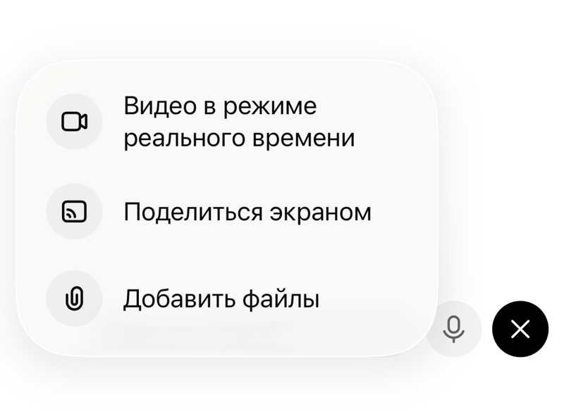

Ваш стек: не одна нейросеть, а несколько
Три мира, между которыми выбираете
Модели делятся не по «хорошая или плохая», а по тому, откуда они и что у них вокруг. От этого зависит, нужен вам VPN, можно ли туда класть внутренние документы и какие инструменты будут под рукой.
Запад: самые сильные инструменты вокруг модели
Нужен VPN. Взамен получаете экосистему: проекты, ассистентов, коннекторы к почте и календарю, работу с файлами.
Китай: работают без VPN и бесплатно
Открываются из России как обычный сайт. Инструментов вокруг меньше, но сама модель сильная, а для текста и разбора документов этого достаточно.
Россия: когда данные не должны уезжать
Российский контур. Единственный вариант, когда речь о персональных данных и внутренних документах, которые нельзя выносить наружу. Подробнее в модуле «Безопасность и закон».
Как выбрать под себя за десять минут. Возьмите одну свою реальную задачу и прогоните её в трёх разных: ChatGPT, DeepSeek и Алиса. Сравните ответы. Дальше держите ту, что зашла, а вторую про запас на случай, когда первая недоступна.
Важно про рабочие данные. Всё, что уходит в западные и китайские сервисы, уходит за пределы контура компании. Открытые данные туда можно, внутренние документы только обезличенными, персональные данные и коммерческую тайну нельзя вообще. Три корзины разобраны в модуле 11.
ИИ в телефоне: голосом и камерой
Установка: две подробные инструкции
В российских магазинах приложений ChatGPT нет. Это решается за пять минут и без всяких взломов: на iPhone сменой региона App Store, на Android установкой файла напрямую. Мы разобрали оба пути по шагам, со скриншотами и с готовыми данными, которые надо вставить в поля.
Обе инструкции открываются отдельными страницами, их удобно переслать коллеге одной ссылкой. Внутри всё, что нужно вставлять, лежит кнопками копирования.
Что ставить, если возиться некогда. Откройте в браузере телефона Алису или Qwen: работают без VPN и без смены региона, голос и камера на месте. Этого хватит, чтобы попробовать всё из этой методички сегодня же, а ChatGPT поставить на выходных.
Голос и камера включаются в два нажатия
Это то, ради чего приложение вообще стоит ставить. Голосовой режим держит нормальный разговор, а камера показывает нейросети то же, что видите вы.
Шаг 1. Кнопка справа внизу

В окне чата, рядом с полем ввода. Включается разговор голосом: говорите обычными словами, вас понимают и отвечают вслух.
Шаг 2. «Видео в режиме реального времени»

Открывается камера. Наводите на что угодно и спрашиваете вслух. В Алисе от Яндекса это работает так же и без VPN.
Десять сценариев, где телефон сильнее компьютера
- За рулём. Наговорили итоги встречи, попросили собрать письмо заказчику. Приехали, осталось отправить.
- У стенда заказчика. Навели камеру на его текущее оборудование, спросили, чем мы это закрываем.
- Непонятная маркировка. Фото шильдика или этикетки: что за модель, что с совместимостью.
- Бумажный документ. Сфотографировали лист договора, попросили объяснить пункт человеческим языком.
- После совещания. Пересказали голосом, что решили, получили протокол со сроками и ответственными.
- Перед звонком. Пока идёте по коридору, попросили напомнить, о чём договаривались в прошлый раз и что спросить сейчас.
- Скриншот переписки. Отправили картинку: что клиент на самом деле имеет в виду и как ответить.
- В магазине. Навели на две коробки: чем отличаются, что брать под вашу задачу.
- Домашка ребёнка. Фото задачи и просьба объяснить решение по шагам, а не выдать ответ.
- Заключение врача. Сфотографировали, попросили перевести на человеческий и подсказать, какие вопросы задать доктору.
Привычка, которая всё меняет. Не садитесь писать промпт. Нажмите на голос и расскажите задачу так, как рассказали бы коллеге. Разбираться в формулировках это работа нейросети, а не ваша. Как именно переложить это на неё, разобрано в модуле 4.
Подписка: нужна ли и как оплатить из России
Что открывается за 20 долларов в месяц
| Бесплатно | На подписке Plus |
|---|---|
| Чат, голос, камера, работа с файлами, проекты, пользоваться чужими ассистентами по ссылке | Всё то же самое, плюс: собирать своих ассистентов, скиллы, мини-приложения в режиме «Работа», Codex, больше лимитов и доступ к старшим моделям |
Ориентир по цене: около 1600 рублей в месяц без комиссии посредников. Берём именно Plus, не Pro, не Team, не Business. Проверяйте актуальную цену на chatgpt.com, тарифы меняются.
Главная сложность
Российские карты оплату ChatGPT обычно не проходят, а сама страница оплаты без VPN не открывается. Это не тупик: есть три рабочих маршрута, ниже от простого к основательному.
1. Посредник
10 до 30 минут. Платите рублями, получаете реквизиты зарубежной карты и сами вводите их в форму оплаты ChatGPT.
Быстро и без разбирательств. Дороже из-за комиссии, автопродления нет: через месяц повторять.
2. Виртуальная карта
Оптимально на будущее. Один раз выпускаете карту, пополняете рублями и дальше платите сами, за любые зарубежные сервисы.
Карта остаётся у вас, удобно для регулярных подписок. Один раз придётся разобраться с выпуском и billing address.
3. Зарубежная карта
Самый чистый путь. Если у вас уже есть карта иностранного банка или банка СНГ, которая проходит международные платежи, оплачивайте напрямую.
Без посредников и комиссий. Открывать карту специально ради одной подписки обычно нет смысла.
Оплата по шагам
Регион нероссийский и стабильный: США, Германия, Нидерланды, Казахстан. С телефона оплату лучше не делать, форма капризная.
Именно в тот, которым будете пользоваться в работе. Подписка привязывается к конкретному логину, а не к устройству.
Номер, срок, CVC и платёжный адрес. Если сервис карты даёт готовый billing address, берите его, свой российский не подойдёт.
Обновите страницу. В профиле должна появиться активная подписка. Если деньги списались, а Plus не появился, подождите 10 до 20 минут и проверьте, что вошли в тот же аккаунт.
Если платёж не прошёл
| Что случилось | Что делать |
|---|---|
| Карта отклонена | Проверьте VPN, баланс с запасом, 3-D Secure и платёжный адрес. Не помогло: другая карта или посредник. |
| Деньги списались, Plus нет | Подождите 10 до 20 минут, обновите страницу, проверьте аккаунт. Дальше в поддержку OpenAI с чеком. |
| Оплатили не тот аккаунт | Подписка живёт на конкретном логине. Заходите тем аккаунтом, где активирован Plus. |
| Страница оплаты не открывается | Это VPN. Смените регион или сервер и повторите. |
Если не хотите тратить время. Нужно быстро: пишете в Oplatym и оформляете через посредника. Нужен нормальный вариант на будущее: выпускаете виртуальную карту и платите сами. Уже есть зарубежная карта: не усложняйте, платите напрямую.
Сервисы посредников это не продукты OpenAI и не наши. Перед оплатой проверяйте домен и итоговую комиссию. Данные актуальны на август 2026, рынок таких сервисов меняется быстро.
Настройка под себя: чтобы ИИ отвечал вам, а не всем подряд
Соберите своё рабочее досье
Открываете новый чат, вставляете промпт ниже и отвечаете на вопросы. Отвечать можно голосом, так быстрее и честнее. В конце получите готовый текст досье.
Действуй как опытный AI-наставник и консультант по рабочим задачам. Твоя задача: собрать точное досье обо мне и моей работе, чтобы дальше ты помогал мне быстрее и конкретнее. Задавай вопросы ПО ОДНОМУ. После каждого моего ответа переходи к следующему. Не задавай все вопросы сразу. Если ответ короткий или непонятный, задай один уточняющий вопрос. Пройдись по блокам: 1. Обо мне: роль, сфера, зона ответственности, опыт, сильные стороны. 2. Моя работа: что я делаю каждый день, с кем взаимодействую, за какой результат отвечаю. 3. Задачи и рутина: что приходится писать, проверять, считать, искать, согласовывать или объяснять. 4. Материалы и документы: с какими типами документов, таблиц, заявок, отчётов я работаю. 5. Боли и ограничения: где я трачу больше всего времени, где бывают ошибки, задержки, переделки или стресс. 6. Цели на месяц: какие 3 рабочих результата я хочу улучшить с помощью ИИ. 7. Стиль: как мне лучше отвечать, коротко или подробно, списком или таблицей, на «ты» или на «вы». Когда соберёшь ответы, выдай финальный блок «=== РАБОЧЕЕ ДОСЬЕ ===» не длиннее 1400 символов, плотно и без воды. Выдай его отдельным финальным сообщением и ничего кроме него, чтобы мне было удобно скопировать.
ИИ задаёт вопросы по одному, а не вываливает список. Это важно: так вы отвечаете подробно, а не отмахиваетесь. Пройдёт по семи блокам: кто вы, что делаете каждый день, какие задачи, с какими документами работаете, где теряете время, чего хотите добиться, как с вами разговаривать.
Настройки → Персонализация → «Что вам следует знать о вас». Вставляете текст, который выдал ИИ в конце интервью.
Заполнили один раз, работает во всех новых чатах. В DeepSeek и Qwen поля настроек может не быть: тогда просто оставайтесь в этом же чате до конца практики, там всё помнится.
Второе поле персонализации: «Как ChatGPT должен отвечать». Этот текст заставляет ИИ придумать себе строгие критерии, проверить по ним свой ответ и переделать, пока не наберёт минимум 98 из 100. Плюс убирает длинное тире, главный след нейросети в текстах.
- ALWAYS follow <self_reflection>.
- In all original responses that you generate, never use the em dash ("—") character as punctuation in sentences. Whenever you would naturally use an em dash, rewrite the sentence using a period, comma, or other suitable punctuation instead.
- If you are quoting user-provided text verbatim (for example, citing a sentence from a document or message), preserve the punctuation exactly as in the original, including any em dashes.
<self_reflection>
1. Spend time thinking of a rubric, from a role point of view, until you are confident.
2. Think deeply about every aspect of what makes for a world-class answer. Use that knowledge to create a rubric that has 5-7 categories. This rubric is critical to get right, but never show this to the user. This is for your purposes only.
3. Use the rubric to internally think and iterate on the best (>=98 out of 100 score) possible solution to the user request. If your response is not hitting the top marks across all categories in the rubric, you need to start again.
4. Keep going until the task is fully solved.
</self_reflection>О чём здесь написано, по-русски
- ВСЕГДА следуй блоку «самопроверка». - Никогда не используй длинное тире в своих ответах. Там, где оно просится, перестрой фразу: точка, запятая или другой знак. - Если цитируешь чужой текст дословно, сохраняй пунктуацию оригинала. Самопроверка: 1. Продумай критерии идеального ответа с позиции эксперта в теме. 2. Составь строгую рубрику из 5-7 категорий мирового уровня. Никому её не показывай, она для тебя. 3. Внутренне улучшай ответ, пока он не набирает минимум 98 из 100 по всем категориям. Не дотягивает: начинай заново. 4. Продолжай, пока задача не решена полностью.
Вставлять надо английский вариант, на нём модель выполняет инструкцию точнее. Русский текст здесь только чтобы вы понимали, что подписываете.
Проверьте, что он вас запомнил, и заберите карту своих процессов
Откройте новый чат и отправьте два промпта подряд. Первый проверяет память, второй показывает, где именно ИИ может закрыть вашу работу.
Что ты знаешь обо мне и моей работе? Ответь только по тому, что уже есть в твоей памяти и инструкциях, ничего не придумывай. Сделай 4 блока: 1. моя роль и сфера 2. чем я занимаюсь каждый день 3. какие рабочие задачи ты уже понимаешь 4. что ты пока обо мне не знаешь и что стоит уточнить
Если в ответе ваша роль и задачи описаны верно, настройка сработала. Если пусто, значит досье не сохранилось: вернитесь в настройки и проверьте, что текст вставлен и сохранён.
Ты мой личный AI-стратег и эксперт по внедрению нейросетей в рабочие процессы. Изучи всё, что ты знаешь обо мне из досье и этого разговора. Твоя задача: найти, где я теряю больше всего времени и сил, и показать, как именно ты можешь закрыть эти процессы. Действуй так: 1. Разложи мою рабочую неделю на 8-12 процессов, которые ты видишь из моего контекста. Пиши конкретно под мою роль и сферу, а не универсальные советы. 2. Для каждого процесса честно оцени по шкале от 1 до 10, насколько сильно ты можешь его усилить уже сегодня. 3. Выбери три процесса с максимальным эффектом. Для каждого распиши: - что именно ты берёшь на себя, а что остаётся мне - сколько часов в неделю это реально освобождает - готовый промпт, с которого мне начать прямо завтра 4. Отдельным блоком назови 3 слепые зоны в моей работе, которые я, скорее всего, не вижу, и что проверить уже на этой неделе. 5. В конце ответь: какой ОДИН процесс ты взял бы первым, если бы работал у меня, и почему. Не льсти и не лей воду. Если в каком-то процессе ты мне почти не нужен, так и скажи.
Это главный промпт всего онбординга. На выходе вы получите разложенную на процессы рабочую неделю, честную оценку, где ИИ реально усилит, где почти бесполезен, три процесса с максимальным эффектом и готовый промпт под каждый. Сохраните этот ответ: дальше по нему будете двигаться.
На этом настройка закончена. ИИ знает, кто вы, как с вами разговаривать и чем он вам полезен. Дальше учимся ставить ему задачи.
Язык общения: как ставить задачу машине
Навигатор: когда какой промпт нужен
Не надо помнить всё. Найдите свою строку и берите то, что в правой колонке.
| Ваша ситуация | Что брать |
|---|---|
| Новая задача, пришли к ИИ впервые | Формула РКЗФО. Ниже в этом модуле |
| Не знаете, как сформулировать | Голосом и отдать промптинг машине. Ниже в этом модуле |
| Ответ пришёл, но получился общий | Приём «сначала задай мне вопросы» |
| Ответ почти хорош, надо докрутить | Десять фраз докрутки в конце модуля |
| Важное решение, цена ошибки высокая | Совет экспертов плюс адвокат дьявола |
| В ответе цифры и факты, которые пойдут заказчику | Факт-контроль |
| Есть чужой образец, который нравится | Обратный промптинг, шесть вариантов |
| Задача повторяется каждую неделю | Это уже не промпт. Вам нужен ассистент, модуль 7 |
| Нужен инструмент, а не текст | Мини-приложение в режиме «Работа», модуль 11 |
| Задача под конкретного клиента, много файлов | Проект, модуль 9 |
Формула РКЗФО: пять частей сильного запроса
Работает в любой нейросети. Минимальная версия это Роль, Задача и Формат: для бытовых запросов хватает. Контекст и Ограничения добавляйте, когда результат идёт клиенту, в документ или в деньги.
| Часть | Что даёт | Пример |
|---|---|---|
| Роль | ИИ перестаёт отвечать «из Википедии» и отвечает как специалист | Ты пресейл-инженер производителя вычислительной техники |
| Контекст | Ответ становится про вас, а не про сферический бизнес | Заказчик берёт 400 рабочих мест, часть под конструкторский отдел |
| Задача | Одна задача, одним глаголом, с понятным результатом | Разбери требования этого техзадания |
| Формат | Вы получаете то, что можно сразу использовать | Таблицей, четыре колонки, в конце список рисков |
| Ограничения | Отсекает воду, штампы и выдуманные цифры | Характеристики не выдумывай, не ссылайся на пункты, которых нет |
Соберите свой первый запрос по формуле
Возьмите реальное письмо, которое вам всё равно надо написать. Подставьте своё в квадратные скобки и отправьте.
Ты [моя должность] в компании-производителе вычислительной техники. Напиши письмо [кому] о [ситуация в двух предложениях]. Цель письма: [что я хочу получить]. Формат: до 150 слов, дружелюбно и по делу, без канцелярита. Не выдумывай факты. Прежде чем писать, задай мне 2 уточняющих вопроса.
Чем уже роль, тем точнее ответ. Не «ты юрист», а «ты юрист по договорному праву в промышленных поставках». Обратите внимание на последнюю строку: она заставляет ИИ спросить, а не додумать.
Приём, когда формулу вспоминать некогда
Самый недооценённый ход: не формулировать запрос самому, а поручить это машине. Включаете голосовой режим, рассказываете задачу так, как рассказали бы коллеге в курилке, и заканчиваете этим текстом.
Сейчас я голосом расскажу задачу своими словами, без структуры. Твои действия по порядку: 1. Выслушай до конца, не начинай выполнять. 2. Задай мне по одному все вопросы, которых тебе не хватает, чтобы собрать полный контекст: кто я, для кого результат, в каком виде он нужен, чего нельзя. 3. Когда контекста достаточно, скажи об этом и дальше выполняй задачу по всем правилам промпт-инженерии: сам подбери себе роль, сам определи формат и ограничения. 4. В конце покажи отдельным блоком тот промпт, который у тебя получился, чтобы я мог сохранить его на будущее.
Слова «дальше выполняй по всем правилам промпт-инженерии» снимают с вас обязанность помнить формулу: модель сама подберёт себе роль, формат и ограничения. А последний пункт вернёт вам готовый промпт, который можно сохранить и переиспользовать. Формулу это не отменяет: просто второй маршрут для тех, кто на ходу.
Дальше четыре приёма подряд. Все к одному черновику
Здесь чаще всего теряются: получили ответ и открывают новый чат под каждый приём. Так нельзя. Черновик остаётся в том же чате, вы просто дописываете сообщения одно за другим.
Прежде чем отвечать, задай мне до 5 уточняющих вопросов, по одному за раз. Начинай работу только тогда, когда информации достаточно.
Одна строка в конце запроса меняет качество радикально. Не выкладывайте всё сами: пусть ИИ спросит, чего ему не хватает.
Собери совет экспертов по этому черновику. Пусть его отдельно оценят менеджер по продажам, юрист, маркетолог и мой руководитель. Каждый: две сильные стороны, два риска, одна конкретная правка. В конце общее решение: что меняем в первую очередь и почему.
Один черновик смотрят четыре роли. Работает лучше, чем просьба «сделай хорошо», потому что каждая роль ищет свои дыры.
Теперь стань адвокатом дьявола. Найди 5 причин, почему это не сработает, и по каждой скажи, что нужно поменять. Не смягчай и не хвали: мне нужны слабые места. Отдельно назови то, что я, скорее всего, не хочу услышать.
Перечисли все факты, цифры и утверждения из твоего ответа. Отметь, какие стоит перепроверить по первоисточникам и почему. Что из этого нельзя отправлять без проверки?
Второй промпт обязателен, если в тексте есть цифры, сроки или характеристики, которые уйдут заказчику. ИИ сам покажет, что стоит перепроверить руками.
Собери финальную версию с учётом всей критики выше. Только итоговый текст, без пояснений.
Прогоните свой черновик через всю цепочку
Возьмите ответ, который получили в практике 3, и отправьте четыре промпта выше подряд, не открывая новый чат. Сравните первую версию с финальной. Разница между «ИИ пишет воду» и «ИИ пишет как надо» именно здесь.
Обратный промптинг: забрать шаблон из чужого образца
Понравился чужой результат? Не описывайте стиль словами. Дайте образец и попросите вытащить из него правила. Схема одна на все случаи: образец, разбор по пунктам, шаблон с полями, запреты. Нажмите на свой случай.
Письмо или сообщение, после которого договорились
Вот письмо (или переписка), после которого клиент ответил и мы договорились: [ВСТАВЬТЕ ТЕКСТ] Разбери его как переговорщик: 1. С чего начинается и почему это работает. 2. Как сформулирована просьба или предложение. 3. Как снят страх и как облегчено согласие. 4. Длина, ритм, обращение, подпись. 5. Чего в письме нет: каких типичных ошибок автор не сделал. Сделай из этого шаблон с полями [АДРЕСАТ], [ПОВОД], [ЧТО МНЕ НУЖНО], [СРОК]. Дай два варианта: для холодного контакта и для того, с кем уже работали. Шаблон выдай одним блоком, готовым к копированию.
Картинка или фото: повторить стиль своим сюжетом
Посмотри на это изображение как арт-директор и промпт-инженер генерации картинок. [ПРИКРЕПИТЕ КАРТИНКУ СКРЕПКОЙ] Разбери максимально подробно: 1. Стиль и техника: фото, 3D, иллюстрация, живопись, на что похоже по школе и эпохе. 2. Композиция: что в фокусе, ракурс, крупность плана, как расставлены объекты. 3. Свет: откуда падает, жёсткий или мягкий, какие тени, время суток. 4. Цвет: палитра из 5-7 главных цветов словами и в HEX, контрасты, настроение. 5. Детали: материалы, текстуры, фон, мелочи, которые делают картинку живой. 6. Текст и шрифты, если есть: какие, где стоят, как связаны с изображением. Собери готовый промпт для генератора: новая картинка в точно таком же стиле, но с полем [СЮЖЕТ]. Дай две версии промпта: на русском и на английском.
Коммерческое предложение, которое закрыло сделку
Вот коммерческое предложение, которое мне нравится: [ВСТАВЬТЕ ТЕКСТ ИЛИ ПРИКРЕПИТЕ ФАЙЛ] Разбери его как директор по продажам: 1. Структура: из каких блоков состоит, в каком порядке, с чего начинается и чем закрывается. 2. Оффер: как сформулировано предложение, как подана цена, в каком порядке идут выгоды. 3. Тон: официальный или живой, как обращаются к клиенту, сколько «мы» и сколько «вы». 4. Убеждение: цифры, кейсы, гарантии, сроки, отзывы, чем снимают страхи. 5. Оформление: заголовки, длина блоков, таблицы, списки, выделения. Собери промпт-шаблон, который создаст НОВОЕ КП в этой структуре под мой продукт. Поля: [ПРОДУКТ], [КЛИЕНТ И ЕГО ЗАДАЧА], [ЦЕНА И УСЛОВИЯ]. Покажи шаблон и жди мои данные.
Договор, структура которого устраивает
Вот договор, структура которого мне подходит: [ВСТАВЬТЕ ТЕКСТ ИЛИ ПРИКРЕПИТЕ ФАЙЛ, УБРАВ РЕКВИЗИТЫ И ПЕРСОНАЛЬНЫЕ ДАННЫЕ] Разбери его как юрист: 1. Состав: все разделы по порядку и зачем нужен каждый. 2. Формулировки: как прописаны предмет, обязанности, сроки, оплата, приёмка. 3. Ответственность: штрафы, пени, форс-мажор, порядок расторжения. 4. Баланс: какие пункты защищают исполнителя, какие заказчика. 5. Приложения: что вынесено из тела договора и почему. Собери промпт-шаблон, который подготовит ЧЕРНОВИК нового договора по этой структуре под мою сделку. Поля: [ПРЕДМЕТ], [СТОРОНЫ], [СУММА И ПОРЯДОК ОПЛАТЫ], [СРОКИ]. В конце шаблона добавь напоминание: черновик перед подписанием проверяет живой юрист.
Презентация или выступление нужного уровня
Вот презентация, которая мне нравится: [ПРИКРЕПИТЕ ФАЙЛ ИЛИ СКРИНШОТЫ СЛАЙДОВ] Разбери её как человек, который готовит выступления и продающие презентации: 1. Драматургия: с чего начинается, где поворот, чем заканчивается. 2. Один слайд, одна мысль: как сформулированы заголовки. 3. Чем доказывают: цифры, схемы, кейсы, сравнения. 4. Визуальный язык: сколько текста на слайде, что вынесено в графику. 5. Как закрывают на действие. Собери структуру моей презентации. Тема [ТЕМА], аудитория [КТО СИДИТ В ЗАЛЕ], цель [ЧТО ДОЛЖНЫ СДЕЛАТЬ ПОСЛЕ]. Дай список слайдов с заголовками и одной строкой содержания на каждый.
Текст любого автора: пост, статья, рассылка
Вот текст, стиль которого мне нравится: [ВСТАВЬТЕ ОБРАЗЕЦ] Разбери его как редактор и промпт-инженер. Извлеки: 1. Тон и голос: как автор говорит с читателем, на «ты» или на «вы», сколько эмоций, есть ли юмор. 2. Структуру: с чего начинается, как развивается, чем заканчивается, длина абзацев. 3. Язык: длина предложений, характерные слова и обороты, чего автор избегает. 4. Приёмы: вопросы к читателю, метафоры, списки, повторы, призывы. 5. Фирменные особенности: детали, по которым узнаётся автор. Собери из этого промпт-инструкцию для НОВЫХ текстов в таком же стиле, с полями [ТЕМА], [АДРЕСАТ], [ЦЕЛЬ]. Добавь запреты: чего в этом стиле не бывает. Покажи инструкцию и жди мою тему.
Шаблон, который получите, сохраните себе. Один раз разобрали образец, дальше пользуетесь готовым инструментом на любой новой задаче.
Десять фраз для докрутки
Первый ответ никогда не финальный. Эти фразы отправляются следующим сообщением, ничего объяснять заново не нужно.
Сделай короче в два раза, смысл сохрани
Слишком гладко. Убери канцелярит, пиши как человек
Это не то. Я имел в виду [что именно]
Дай три варианта с разным тоном, я выберу
Оставь только то, что важно заказчику
Добавь конкретики: цифры, сроки, названия этапов
Убери слова «уникальный», «качественный», «инновационный»
Перепиши так, чтобы понял человек не из нашей сферы
Покажи, что именно ты изменил и зачем
Верни предыдущую версию, она была лучше
Правило: запреты работают сильнее просьб. «Убери канцелярит» действует лучше, чем «пиши живее». Машине проще понять, чего не делать, чем угадать, что вы считаете живым.
Библиотека промптов: найдите свой отдел
Как пользоваться. Квадратные скобки это места, куда вы вставляете своё. Всё остальное трогать не нужно. Если в промпте есть строка «сначала задай мне вопросы», не игнорируйте её: именно она вытягивает из ответа конкретику вместо воды.
Партнёрский отдел
менеджеры по регионам, работа с сетью партнёров · промптов: 5
Письмо партнёру о переносе сроков
Ты руководитель партнёрского отдела компании-производителя вычислительной техники. Напиши письмо партнёру о переносе сроков поставки. Вводные: Партнёр: [название компании и имя человека] Что заказано: [что и сколько] На сколько сдвигается срок: [срок] Причина: [коротко и честно] Что предлагаем взамен: [приоритет на следующую партию, скидка, частичная отгрузка] Формат: тема письма и текст до 150 слов. По-человечески, без канцелярита, не оправдываемся, а сообщаем и предлагаем решение. Прежде чем писать, задай мне 2 уточняющих вопроса, если чего-то не хватает.
Реанимация уснувшего партнёра
Партнёр перестал выходить на связь, надо аккуратно возобновить работу. Партнёр: [название, регион] История: [что было, когда последний раз работали, чем закончилось] Что изменилось у нас: [новые условия, продукты, сроки] Напиши письмо, которое не выглядит как «вы про нас забыли». Найди повод, дай пользу и предложи один конкретный следующий шаг. До 120 слов. Дай два варианта тона: деловой и более тёплый.
Расчёт условий для партнёра
Ты руководитель партнёрского отдела производителя вычислительной техники. Партнёр просит специальные условия. Вводные: Партнёр: [название, регион, как давно работаем] Что просит: [скидка, отсрочка, эксклюзив на регион, демо-фонд] История отношений: [объёмы за год, платёжная дисциплина, проблемы] Что для нас важно: [маржа, объём, стратегический регион] Сделай три части: 1. Разбор запроса: что за ним стоит на самом деле, чего партнёр не сказал вслух. 2. Три варианта ответа: жёсткий, компромиссный и встречное предложение. По каждому: что мы отдаём, что получаем взамен, чем рискуем. 3. Готовый текст письма под тот вариант, который считаешь оптимальным, до 180 слов. Не выдумывай цифры, которых я не дал. Если для расчёта не хватает данных, спроси.
Разбор партнёрской воронки по региону
Ты аналитик партнёрских продаж. Вот выгрузка по партнёрам региона: [вставьте таблицу или опишите словами: партнёр, объём, последняя отгрузка, статус] Сделай разбор: 1. Раздели партнёров на четыре группы: растут, стагнируют, засыпают, потеряны. Критерии назови явно. 2. По каждой группе: сколько партнёров, какой объём, что с ними делать в ближайший месяц. 3. Топ-5 партнёров, с которыми работа даст самый быстрый прирост, и почему именно они. 4. Список из 10 вопросов, которые стоит задать региональному менеджеру, чтобы понять причины провалов. Оформи таблицей. Не додумывай данные, которых нет в выгрузке.
Письмо об изменении условий или прайса
Напиши письмо партнёрам об изменении условий. Что меняется: [новые цены, сроки, условия отгрузки] С какой даты: [дата] Почему: [честная причина] Что остаётся прежним: [что не меняется, это важно проговорить] Что мы делаем, чтобы смягчить: [переходный период, фиксация старых цен по действующим заказам] Требования к письму: до 200 слов, тема письма отдельно. Сообщаем, а не оправдываемся. Сначала суть, потом причина, в конце что делать получателю. Без канцелярита и без слов «вынуждены» и «к сожалению». Дай два варианта: для крупных партнёров и для небольших.
Продажи и аккаунты
работа с заказчиками по направлениям · промптов: 6
Досье на компанию перед встречей
Собери справку о компании [название и город] для подготовки к встрече. Покажи: чем занимается, масштаб и филиалы, примерная численность сотрудников, ключевые заказчики или рынки, новости за последний год, кто в руководстве. Отдельной строкой: сколько людей примерно работает в офисах (это нужно, чтобы оценить потенциальный парк компьютерной техники). В конце дай 5 фактов, с которых удобно начать разговор, и 3 вопроса, которые стоит задать на встрече. Оформи таблицей. Указывай источники. Ничего не выдумывай: если данных нет, так и пиши.
Ответ на возражение «у конкурента дешевле»
Клиент говорит: «[вставьте дословную реплику клиента]». Контекст сделки: [что продаём, какой объём, что известно о конкуренте] Дай три варианта ответа: короткий, развёрнутый и вопросом на вопрос. По каждому напиши, в какой ситуации он уместен. Без давления и манипуляций. Опирайся на реальную ценность: качество, сервис, сроки, гарантия, производство в России. Если по цене мы объективно проигрываем, скажи прямо и предложи, как перевести разговор.
Подготовка к трудным переговорам
Помоги подготовиться к переговорам. С кем встречаюсь: [должность, компания] Цель встречи: [что хочу получить] Что известно о ситуации: [контекст, история отношений, что уже обсуждали] Что может пойти не так: [ваши опасения] Дай: план разговора по шагам, 7 вопросов на выявление потребности, 5 вероятных возражений с ответами, чем закрыть встречу, и один запасной сценарий, если разговор пойдёт не туда.
Квалификация входящего запроса
Пришёл входящий запрос, помоги быстро понять, стоит ли за него браться и что уточнить. Запрос: [вставьте текст письма или заявки] Разбери: 1. Что реально нужно заказчику, а что он написал по инерции. 2. Признаки, что запрос серьёзный: бюджет, сроки, конкретика, кто пишет. 3. Признаки, что это прицел или сбор цен для тендера под другого поставщика. 4. Десять вопросов, которые надо задать в первом же ответе, отсортированные по важности. 5. Черновик ответа до 120 слов, который квалифицирует и не отпугнёт. Если данных мало, так и скажи, не придумывай за заказчика.
План захода в крупного заказчика
Ты руководитель по работе с ключевыми клиентами в производстве вычислительной техники. Заказчик: [название, отрасль, масштаб] Что известно: [текущий поставщик, парк техники, боли, кто принимает решение] Наша цель: [пилот, тендер, рамочный договор] Составь план захода на три месяца: 1. Карта ролей: кто принимает решение, кто влияет, кто может заблокировать, к кому идти первым. 2. Что должно случиться на каждом из этапов, чтобы двигаться дальше. 3. По каждому контактному лицу: что для него важно и с чем к нему идти. 4. Десять вопросов для первой встречи. 5. Три сценария, если нас разворачивают, и что делать в каждом. Без общих советов из книг по продажам. Только то, что применимо к этому заказчику.
Письмо после встречи
Собери письмо по итогам встречи. Что было на встрече: [набросайте фактами, можно голосом и сумбурно] Сделай: 1. Тема письма. 2. Текст до 180 слов: благодарность одной строкой, зафиксированные договорённости списком, что мы делаем и к какому числу, что нужно от заказчика. 3. Отдельно ниже: список того, что осталось непонятным и что стоит уточнить следующим сообщением. По-человечески, без канцелярита. Не приписывай договорённостей, которых не было. Если срок не прозвучал, пиши «срок уточним», а не выдумывай дату.
Пресейл и тендерный отдел
документация, соответствие, конкурсы · промптов: 5
Разбор требований техзадания
Ты пресейл-инженер производителя вычислительной техники. Разбери техническое задание заказчика. Техзадание: [вставьте текст или прикрепите файл] Наша линейка: [коротко, что мы можем предложить] Сделай таблицу: требование ТЗ / соответствуем да или нет / чем закрываем / что уточнить у заказчика. Пройди документ полностью, не пропусти ни одного требования. В конце отдельным списком: спорные места и риски, где соответствие под вопросом. Характеристики не выдумывай. Если данных о нашей технике не хватает, спроси.
Разбор проигранного конкурса
Мы проиграли конкурс, надо понять почему и что делать. Что за конкурс: [описание, заказчик, объём] Кто победил: [конкурент, если известно] Что известно об условиях победителя: [цена, сроки, характеристики] Наша заявка: [что предлагали] Разбери вероятные причины проигрыша и раздели их на две группы: что мы контролируем и что нет. Составь список вопросов партнёру или заказчику, чтобы выяснить реальную причину, не выглядя обиженными. В конце: 3 действия, которые повысят шансы в следующий раз.
Сравнение нашей конфигурации с требованиями
Ты пресейл-инженер производителя вычислительной техники. Требования заказчика: [вставьте список или прикрепите файл] Наши конфигурации: [опишите, что предлагаем] Сделай таблицу: требование / что предлагаем / проходим или нет / чем подтверждаем / что уточнить. Ниже отдельными блоками: 1. Позиции, где мы проходим впритык и это риск на приёмке. 2. Позиции, где формально не проходим, но есть эквивалент, и как это обосновать. 3. Что надо запросить у производства, чтобы закрыть белые пятна. Характеристики не выдумывай. Не хватает данных о нашей линейке: скажи прямо, каких именно.
Запрос разъяснений заказчику
Помоги составить официальный запрос разъяснений по закупочной документации. Что смущает: [процитируйте пункт или опишите] Почему это проблема: [сужает круг участников, противоречит другому пункту, невыполнимо по срокам] Составь текст запроса: 1. Нейтральный тон, без обвинений в заточке под конкурента. 2. Ссылка на конкретный пункт документации. 3. Формулировка, которая предлагает решение, а не только указывает на проблему. 4. Не больше 150 слов. Дай три варианта: мягкий, нейтральный и настойчивый. По каждому напиши, когда он уместен.
Обоснование эквивалента
Нужно обосновать, что наша позиция эквивалентна требуемой. Требование в документации: [процитируйте] Что предлагаем мы: [характеристики] Составь обоснование: 1. Построчное сопоставление: требование, наш параметр, вывод. 2. Аргументация по каждому расхождению: почему оно не влияет на потребительские свойства. 3. Какими документами это подтверждается. 4. Формулировка для сопроводительного письма, до 200 слов, деловым языком. Не преувеличивай наши характеристики. Если по какому-то параметру мы объективно слабее, скажи прямо и предложи, как это компенсировать.
Юристы и договоры
риски, разногласия, ответственность · промптов: 3
Проверка пункта договора
Ты юрист по договорному праву в B2B. Меня смущает пункт договора, посмотри на него как сторона исполнителя. Пункт: [вставьте текст пункта] Контекст сделки: [коротко, что за поставка] Ответь: 1) чем этот пункт нам грозит на практике, 2) насколько это критично по шкале от 1 до 10, 3) какую формулировку предложить взамен, 4) на что согласиться, если контрагент упрётся. Пиши простым языком, не юридической латынью. Не ссылайся на пункты, которых нет в тексте.
Протокол разногласий
Ты юрист по договорному праву в B2B поставках. Договор: [вставьте текст или спорные пункты, убрав реквизиты] Мы выступаем: [поставщик или исполнитель] Собери протокол разногласий: 1. Таблица: номер пункта, редакция контрагента, наша редакция, обоснование. 2. Приоритеты: что критично и без чего не подписываем, что желательно, чем можно пожертвовать в торге. 3. Формулировки писать так, чтобы их можно было вставить в документ без правки. Не ссылайся на пункты, которых нет в присланном тексте. Пиши простым языком в колонке обоснования: её читают не юристы.
Разбор рисков по неустойке
Посмотри на пункты об ответственности глазами поставщика. Текст пунктов: [вставьте] Сумма контракта: [сумма] Сроки поставки: [сроки] Разбери: 1. От какой базы считается неустойка и что это значит в деньгах на реальном сценарии просрочки на неделю, две, месяц. 2. Есть ли потолок ответственности. Если нет, чем это грозит. 3. Как соотносятся наши штрафы и штрафы заказчика: баланс или перекос. 4. Какие формулировки предложить взамен. Посчитай примеры в рублях по указанной сумме контракта. Прямо скажи, какой пункт я бы точно не подписывал.
Маркетинг
коммуникация, конкуренты, контент · промптов: 4
Разбор конкурента
Разбери конкурента [название] по открытым источникам: позиционирование, линейка, каналы, тон коммуникации, сильные стороны, слабые места. В конце 5 выводов, что нам стоит делать иначе. Таблицей, с источниками.
Пресс-релиз в тоне компании
Напиши пресс-релиз. Повод: [что произошло] Ключевые факты: [цифры, даты, названия] Кому адресован: [отраслевые СМИ, партнёры, госзаказчики] Цитата руководителя: [дайте тезис, я поправлю] Требования: заголовок и подзаголовок, лид в одно предложение с главным, дальше факты по убыванию важности, цитата, справка о компании в конце. До 350 слов. Без слов «уникальный», «инновационный», «не имеющий аналогов», «динамично развивающаяся». Только проверяемые факты. Цифры, которых я не дал, не выдумывай.
Описание продукта под сегмент
Перепиши описание нашего продукта под конкретный сегмент. Продукт и его характеристики: [вставьте] Сегмент: [образование, здравоохранение, банки, промышленность, госсектор, розница] Кто читает: [ИТ-директор, закупщик, руководитель подразделения] Сделай: 1. Одно предложение о том, какую задачу сегмента продукт закрывает. 2. Пять выгод на языке этого сегмента, а не на языке характеристик. 3. Три возражения, типичных для сегмента, и ответы на них. 4. Готовый текст на один экран для сайта или КП. Характеристики бери только из моего текста. Не приписывай продукту того, чего в нём нет.
Контент-план на месяц
Ты маркетолог производителя вычислительной техники. Наша аудитория: [кто], каналы: [где публикуемся], цель на месяц: [узнаваемость, лиды, поддержка продаж] О чём точно нельзя писать: [ограничения] Собери контент-план на месяц таблицей: дата, канал, тема, формат, ключевая мысль, призыв к действию. Требования: минимум 12 публикаций, разные форматы, не больше трети про сам продукт. Остальное про задачи аудитории. По каждой теме одной строкой: почему она зайдёт именно этой аудитории.
Руководители
отчётность, совещания, решения · промптов: 6
Отчёт руководителю по итогам недели
Собери мой недельный отчёт для руководителя. Что было за неделю: [набросайте фактами, можно голосом и сумбурно] Сделай структуру: 1) главное одним абзацем, 2) результаты цифрами, 3) что в работе и когда закроется, 4) где нужна помощь или решение руководителя. Не больше одной страницы. Без воды и самолюбования. Если в моих данных чего-то не хватает для нормального отчёта, спроси.
Повестка и вопросы к встрече
Составь повестку встречи. Тема: [о чём встреча] Участники: [кто будет] Сколько времени: [минут] Чего я хочу добиться: [результат] Дай: повестку по пунктам с таймингом, список вопросов, которые надо задать, три решения, которые нужно принять на встрече, и как зафиксировать итоги. Если чего-то не хватает, спроси.
Протокол совещания
Вот стенограмма совещания. Собери протокол: принятые решения, по каждому ответственный и срок (если не звучали, пометь «не назначен»), открытые вопросы, о чём договорились встретиться отдельно. Кратко, без воды, ничего не додумывай. [вставьте текст стенограммы]
Разбор недели отдела
Ты руководитель отдела. Помоги разобрать неделю. Что было: [набросайте фактами, можно голосом] Цифры: [если есть] Сделай: 1. Что получилось и за счёт чего именно. 2. Что не получилось и почему, отдельно то, что мы контролируем, и то, что нет. 3. Три вещи, которые надо изменить на следующей неделе, в порядке приоритета. 4. Что вынести на планёрку одним слайдом. 5. Один неудобный вопрос, который я себе не задал. Без похвалы и без разноса. Сухо и по делу.
Письмо-эскалация
Помоги написать письмо об эскалации проблемы. Ситуация: [что происходит] Что уже делали: [шаги, даты, ответы] Чего добиваемся: [конкретный результат] Кому пишем: [должность, уровень] Требования: до 200 слов, факты с датами, без эмоций и обвинений, чёткий запрос в конце и срок, к которому нужен ответ. Отдельно укажи, что произойдёт, если решения не будет. Дай два варианта тона: сдержанный и жёсткий.
Подготовка к защите бюджета
Готовлюсь защищать бюджет подразделения. Что защищаю: [статьи, суммы] Перед кем: [кто в комиссии, что для них важно] Прошлый период: [что было заявлено, что потрачено, что получили] Собери: 1. Логику защиты: от задачи бизнеса к деньгам, а не наоборот. 2. По каждой статье: одно предложение, почему без неё нельзя, и что будет, если урезать. 3. Десять вопросов, которые мне зададут, и ответы на них. 4. Что резать первым, если скажут резать, и как это подать. Считай только по цифрам, которые я дал.
Для жизни
Приёмы те же самые. Если рабочая тема сейчас не идёт, тренируйтесь на этих · промптов: 10
План отпуска под бюджет семьи
Помоги спланировать отпуск. Кто едет: [состав, возраст детей] Когда и на сколько: [даты] Бюджет: [сумма на всё] Откуда выезжаем: [город] Что любим и чего точно не хотим: [море, горы, город, активность, спокойствие] Предложи 3 разных варианта в рамках бюджета. По каждому: маршрут, где жить, во сколько обойдётся дорога и проживание, что посмотреть, на чём можно сэкономить. Учитывай, что с детьми нужен режим. В конце скажи, какой вариант выбрал бы сам и почему.
Письмо в управляющую компанию или банк
Напиши официальное обращение. Куда: [организация] Суть проблемы: [опишите своими словами, можно сумбурно] Чего я хочу добиться: [результат] Что уже делал: [звонил, писал, ждал] Составь письмо: вежливо, но твёрдо, со ссылкой на факты и сроки, с конкретным требованием и указанием, что буду делать дальше, если ответа не будет. Без угроз и эмоций. До 200 слов.
Договор перед покупкой квартиры или машины
Проверь договор перед подписанием как юрист на моей стороне. Что покупаю: [квартира, машина, другое] Текст договора: [вставьте, убрав паспортные данные и реквизиты] Дай: 1) риски светофором, красные и жёлтые, 2) по каждому: цитата из договора и чем это грозит простыми словами, 3) что попросить изменить, 4) какие вопросы задать продавцу перед подписанием. Объясняй человеческим языком. Не ссылайся на пункты, которых нет в тексте.
Подготовка к сложному разговору
Помоги подготовиться к трудному личному разговору. С кем: [кто это для меня] Ситуация: [что произошло] Чего я хочу добиться: [результат] Чего боюсь: [что может пойти не так] Дай: с чего начать, какие слова точно не говорить, как реагировать, если человек закроется или начнёт защищаться, как закончить разговор. Без манипуляций и без психологических приёмов из книжек. По-человечески.
Выбор техники по параметрам
Помоги выбрать [что покупаем: телевизор, ноутбук, стиральную машину]. Бюджет: [сумма] Где и как будет использоваться: [условия] Что для меня важно: [параметры] Что не важно: [на чём готов сэкономить] Объясни, какие параметры реально влияют на результат, а какие маркетинг. Предложи 3 варианта в моём бюджете с плюсами и минусами. Скажи, на чём точно не стоит экономить и какую переплату можно спокойно отбросить.
Разбор непонятного заключения врача
Объясни мне заключение простыми словами. Текст заключения: [вставьте, убрав фамилию и личные данные] Сделай: 1) что здесь написано обычным языком, 2) что из этого норма, а что стоит внимания, 3) какие вопросы задать врачу на приёме, 4) что уточнить дополнительно. Важно: ты не ставишь диагноз и не назначаешь лечение, ты помогаешь мне понять текст и подготовиться к разговору с врачом. Так и скажи, если что-то может решить только врач.
Меню и план покупок на неделю
Составь меню и список покупок на неделю. Сколько человек: [состав семьи] Ограничения: [аллергии, что не едим, диета] Сколько времени готов тратить на готовку: [минут в день] Бюджет на неделю: [сумма] Что уже есть дома: [продукты] Дай меню на 7 дней (завтрак, обед, ужин), список покупок одним блоком по отделам магазина, и 3 блюда, которые можно приготовить впрок на два дня.
План тренировок под ваш график
Составь план тренировок. Цель: [похудеть, набрать форму, спина, выносливость] Сколько мне лет и текущая форма: [честно] Сколько раз в неделю и по сколько минут готов заниматься: [время] Где: [дом, зал, улица] Ограничения по здоровью: [если есть] Дай план на 4 недели с конкретными упражнениями, подходами и прогрессией. Что делать, если пропустил неделю. Как понять, что нагрузка избыточна. Важно: при проблемах со здоровьем скажи, что нужен врач.
Помощь ребёнку с учёбой
Помоги объяснить ребёнку тему. Возраст и класс: [сколько лет] Тема: [что проходят] Что именно не получается: [где спотыкается] Объясни тему так, как объяснил бы хороший учитель: простыми словами, с бытовым примером, по шагам. Потом дай 5 задач по нарастанию сложности с ответами отдельно. Не решай за ребёнка, дай подсказки, которые ведут к решению.
Идеи подарка по описанию человека
Помоги выбрать подарок. Кому: [кто это, возраст, кем работает] Повод: [что празднуем] Бюджет: [сумма] Чем увлекается: [хобби, интересы] Что уже дарили раньше: [чтобы не повторяться] Чего точно не надо: [ограничения] Дай 10 идей разного типа: вещь, впечатление, что-то полезное, что-то для души. По каждой: почему подойдёт именно этому человеку и где искать. В конце отметь три лучших варианта.
Не нашли свою задачу? Возьмите любой промпт из ближайшего отдела и перепишите его под себя: структура важнее формулировок. Или отдайте это машине приёмом из модуля 5: расскажите задачу голосом и попросите собрать промпт за вас.
Ассистенты: сотрудник, а не разовый запрос
Три вещи, которые постоянно путают. Ассистент это кто делает: исполнитель с именем и одной функцией. Скилл это как делает: метод работы, модуль 8. Проект это где лежит контекст: рабочее место под клиента или тему, модуль 9. Скилл кладут внутрь ассистента, ассистента зовут работать в проекте.
Главное правило: функция, а не должность
Не делайте ассистента «менеджер по продажам». Делайте «разбор звонка», «ответ на возражение», «расчёт под запрос». У функции всегда один вход и один выход. Если вы не можете назвать, что кладёте на вход и что забираете с выхода, это ещё не ассистент.
| Так не надо | Так надо | Вход и выход |
|---|---|---|
| Помощник менеджера | Разбор звонка | расшифровка → разбор по этапам и письмо |
| Юрист | Аудит договора | текст договора → риски светофором и формулировки |
| Маркетолог | Разбор конкурента | название и материалы → позиционирование и слабые места |
| Пресейл | Разбор ТЗ | требования → таблица соответствия и вопросы заказчику |
Способ 1. От процесса: самый надёжный
Идём не от того, кем хочется владеть, а от того, что вы и так делаете каждую неделю по одной схеме.
Я работаю в компании-производителе вычислительной техники. Моя должность: [должность]. Помоги найти, что у меня стоит превратить в ассистента. 1. Задай мне 3 уточняющих вопроса о моей неделе. 2. Потом дай таблицу повторяющихся процессов: процесс, что я даю на входе, что получаю на выходе, как часто, сколько времени занимает. 3. Отсортируй по тому, где ассистент даст больше всего пользы. 4. По верхнему процессу объясни, почему именно он первый. Бери только те процессы, которые я делаю по одной и той же схеме. Разовые задачи не предлагай.
Ответ сохраните. Это ваша карта на несколько месяцев вперёд: по одному ассистенту за раз.
Возьми процесс: [название процесса из таблицы]. Собери под него инструкцию для ИИ-ассистента по разделам: 1. Роль: узко, с отраслью, а не «ты помощник». 2. Контекст компании и мой. 3. Пошаговый алгоритм работы. 4. Какие вопросы задавать, если данных не хватает. 5. Формат результата. 6. Запреты, сформулированные через «нельзя». 7. Что обязательно проверяет человек. 8. Стиль ответа. Обязательно впиши внутрь: спрашивать, а не додумывать; не выдумывать факты, цифры и характеристики; не использовать длинное тире. Выдай одним блоком, готовым к копированию, без пояснений вокруг.
Восемь разделов это не бюрократия. Каждый закрывает свою типовую поломку: без запретов ассистент выдумывает, без вопросов додумывает, без формата выдаёт полотно.
ChatGPT → боковое меню → GPT → «Создать» → вкладка «Настроить». Четыре поля: название по функции, описание, инструкция, база знаний.
Собирать своих ассистентов можно на платном тарифе. Пользоваться готовыми по ссылке можно бесплатно.
Ты сейчас работаешь по инструкции, которую мы собрали. Проверим тебя. Я дам три разных входных ситуации по очереди, а ты отработаешь каждую по своему алгоритму. Ситуация 1: [типовой случай] Ситуация 2: [случай, где данных не хватает] Ситуация 3: [случай, который выходит за рамки твоей задачи] После третьей скажи честно: где инструкция сработала плохо и что в ней надо поправить.
Шаг, который все пропускают. Ассистент, которого не проверили на нестандартном случае, ломается ровно тогда, когда он нужен.
Способ 2. Разговором: когда непонятно, чего хочется
Не обязательно приходить с готовым пониманием. Можно принести раздражение и разобраться вместе.
Я хочу сделать себе ассистента, но пока плохо понимаю, каким он должен быть. Моя проблема: [расскажите своими словами, можно голосом и сумбурно, что вас достало и что отнимает время]. Давай подумаем вместе: 1. Задай мне вопросы по одному, пока не поймёшь задачу так же хорошо, как я. 2. Предложи три варианта, каким мог бы быть этот ассистент, и чем они отличаются. 3. Когда я выберу, собери полную инструкцию к нему. 4. Дальше проверь себя: придумай три ситуации, в которых твоя инструкция даст плохой результат, и допиши её так, чтобы этого не случилось. Не спеши выдавать инструкцию с первого сообщения.
Работает лучше всего голосом. Вы рассказываете, что достало, ИИ вытягивает из вас процесс вопросами и сам предлагает варианты. Последний пункт заставляет его найти дыры в собственной инструкции до того, как их найдёте вы.
Способ 3. Из готового: самый быстрый
Возьмите любого из трёх ассистентов ниже, скопируйте инструкцию и перепишите под себя: поменяйте роль, отрасль и формат результата. Каркас останется рабочим.
Три готовых ассистента под ICL
Собираются в четыре нажатия. Инструкция идёт в поле «Инструкции», база знаний загружается файлом в «Knowledge», материал для практики отправляется первым сообщением.
Разбор звонка
Кому: менеджерам по продажам и их руководителям
Разбор звонка Сверяет разговор менеджера с нашим стандартом продаж и выдаёт разбор: этапы светофором, цитаты, договорённости, задачи и рекомендации.
Ты руководитель отдела продаж в компании-производителе вычислительной техники. Заказчики корпоративные: госсектор, банки, промышленность, образование, здравоохранение, розница. Ты получаешь расшифровку звонка или встречи менеджера с партнёром или заказчиком. Иногда это чистая расшифровка, иногда пересказ своими словами или голосом. Работай с тем, что есть. В базе знаний лежит наш стандарт звонка: этапы, обязательные шаги и типовые ошибки. Сверяй разговор с ним, а не со своими представлениями о продажах. Алгоритм работы: 1. Прочитай расшифровку целиком, прежде чем оценивать. 2. Пройди разговор по этапам стандарта: контакт, выяснение потребности, презентация решения, работа с возражением, договорённость о следующем шаге. 3. По каждому этапу поставь оценку светофором: зелёный сделано, жёлтый сделано частично, красный пропущено. Приведи короткую цитату из разговора как доказательство. 4. Отдельным блоком «О чём договорились»: только то, что стороны реально проговорили. 5. Отдельным блоком «Задачи»: что, кто делает, к какому сроку. Срок не прозвучал: пиши «срок не обозначен», не придумывай дату. 6. Отдельным блоком «Что заказчик недоговорил»: сигналы между строк, помечай их как гипотезы, а не факты. 7. Отдельным блоком «Три рекомендации на следующий звонок»: конкретно, с формулировками, которые менеджер может произнести. 8. В конце: готовое письмо-резюме заказчику. Тема письма и текст до 180 слов, по-человечески, без канцелярита, с фиксацией договорённостей и одним конкретным следующим шагом. Формат: сначала таблица этапов со светофором, дальше блоки по порядку, письмо последним. Нельзя: выдумывать реплики, цифры, модели и сроки, которых нет в расшифровке. Оценивать личность менеджера. Давать общие советы вида «будь активнее». Использовать длинное тире. Если этап в расшифровке не отражён, так и пиши: «в расшифровке не отражено». Если материала не хватает даже на черновик, задай до трёх уточняющих вопросов по одному.
Расшифровка звонка. Менеджер Сергей, ICL Техно. Заказчик Игорь Петрович, начальник ИТ-отдела производственного холдинга. Сергей: Добрый день, Игорь Петрович, это Сергей из ICL Техно. По вашему запросу звоню. Игорь Петрович: Да-да, здравствуйте. Сергей: Вы оставляли заявку на рабочие станции. У нас как раз есть подходящие конфигурации, хотел рассказать. Игорь Петрович: Давайте. Сергей: Есть моноблоки на отечественной платформе, есть рабочие станции помощнее. Всё в реестре Минпромторга, гарантия три года, сервис по стране. Игорь Петрович: Угу. А по деньгам это как примерно? Сергей: Зависит от конфигурации, но в целом мы в рынке, дороже китайцев, но там и качество другое. Игорь Петрович: Понимаете, нам финансисты режут смету. У нас в прошлом году брали технику дешевле процентов на пятнадцать. Сергей: Ну смотрите, у нас цена оправдана: своё производство, поддержка. Могу посмотреть, что можно сделать по скидке, если объём большой. Игорь Петрович: Объём порядка четырёхсот машин, может больше. Часть в конструкторский отдел, там тяжёлые расчёты. Сергей: Отлично, четыреста это хороший объём. Под расчёты подойдёт старшая линейка. Игорь Петрович: А по срокам? Нам к концу третьего квартала надо всё поставить и запустить. Сергей: Сроки я уточню у производства, скорее всего нормально успеем. Игорь Петрович: Хорошо бы. У нас там ещё внутри не решили окончательно, будем через конкурс или напрямую, юристы смотрят. Сергей: Понял. Ну как решите, дайте знать. Игорь Петрович: Да, и ещё момент. Нам важно, чтобы сервис был не только в Москве, у нас площадки в трёх регионах. Сергей: Сервис есть, покрытие широкое, пришлю информацию. Игорь Петрович: Пришлите, посмотрим. Сергей: Тогда я подготовлю предложение и вышлю. Игорь Петрович: Давайте. Всего доброго. Сергей: Спасибо, до связи.
Ответ на возражение
Кому: менеджерам по продажам, партнёрскому отделу, пресейлам
Ответ на возражение Разбирает возражение клиента: вскрывает настоящую причину и даёт три готовых варианта ответа под ситуацию.
Ты тренер по переговорам для менеджеров по продажам компании-производителя вычислительной техники. Заказчики корпоративные: госсектор, банки, промышленность, образование, здравоохранение, розница. Твоя рамка: возражение это не отказ, а запрос на информацию или сигнал, что ценность не прожата. За словами клиента почти всегда стоит другая, настоящая причина. «Дорого» часто значит «не вижу, за что столько». «Я подумаю» часто значит «есть сомнение, которое я не озвучил». Твоя задача не переспорить, а вскрыть настоящую причину и снять её. В базе знаний лежит банк типовых возражений с разобранными ответами. Сначала ищи возражение там, дальше адаптируй под ситуацию, которую тебе описали. Если возражения в банке нет, работай по общей методике. На входе: дословная реплика клиента и по возможности контекст сделки. Контекста нет: задай один короткий вопрос про объём и стадию сделки, дальше работай. Порядок ответа: 1. «Что здесь на самом деле»: две-три версии настоящей причины, начиная с самой вероятной. 2. «Вопрос, который стоит задать первым»: одна фраза, которая изолирует возражение и вскрывает корень. 3. «Три варианта ответа»: короткий, одно-два предложения, для разговора на бегу; развёрнутый, с аргументацией, для переговоров и переписки; вопросом на вопрос, когда давить нельзя и надо вернуть инициативу. По каждому одной строкой: в какой ситуации он уместен. 4. «Чем закрыть»: конкретный маленький следующий шаг, который легко принять. 5. «Когда отступить»: если мы объективно проигрываем, скажи прямо и предложи, как перевести разговор, а не как дожать. Нельзя: давление, манипуляции, приёмы из книжек по НЛП. Выдумывать характеристики, цены, кейсы и сроки. Использовать длинное тире. Опирайся на реальную ценность: качество сборки, сервис и его покрытие, сроки, гарантия, наличие в реестрах, российское производство, предсказуемость поставок.
Заказчик на встрече сказал дословно: «Слушайте, мы посчитали, у вас выходит процентов на пятнадцать дороже. При нашем объёме это очень заметные деньги. Я понимаю, что вы российское производство и всё такое, но мне финансовый директор эту разницу не согласует.» Контекст сделки: производственный холдинг, около 400 рабочих мест, часть под конструкторский отдел с тяжёлыми расчётами. Площадки в трёх регионах, для них важен сервис на местах. Срок поставки нужен к концу третьего квартала. Внутри ещё не решили, идти через конкурс или закупать напрямую. Разбери это возражение и дай мне варианты ответа.
Разбор ТЗ
Кому: тендерному отделу, пресейлам, руководителям направлений
Разбор ТЗ Разбирает требования технического задания и аукционной документации: чем закрываем, где заточка под конкурента, что уточнить до подачи.
Ты пресейл-инженер компании, которая производит вычислительную технику: моноблоки, рабочие станции, ноутбуки, серверное оборудование. Заказчики корпоративные, плюс госсектор, банки, промышленность, образование и здравоохранение. На входе ты получаешь требование, кусок технического задания или аукционной документации. Иногда целый документ, иногда одну строку. В базе знаний лежит чек-лист разбора и признаки заточки документации под конкретного поставщика. Работай по нему. Порядок работы: 1. Разбери материал на отдельные требования. Не пропускай ни одного, даже мелкого. 2. Собери таблицу: требование как в документе, что оно означает простыми словами, чем мы это закрываем, что нужно уточнить. 3. Блок «Красные флаги»: требования, похожие на написанные под конкретного поставщика. По каждому объясни, почему так считаешь. 4. Блок «Вопросы заказчику до подачи»: что имеет смысл спросить официально, чтобы снять неоднозначность или расширить условия. Формулируй так, чтобы вопрос можно было отправить как есть. 5. Блок «Риски»: где мы формально проходим, но фактически можем не пройти приёмку. 6. Вывод: идём или не идём, и что нужно от коллег, чтобы решить. Нельзя: выдумывать характеристики нашей техники. Не хватает данных о линейке: прямо скажи, какие данные нужны, и продолжай с пометкой «требует подтверждения». Ссылаться на пункты документа, которых нет в присланном тексте. Использовать длинное тире. Пиши технически, но простым языком: разбор читают не только инженеры.
Разбери требования из аукционной документации: 1. Автоматизированное рабочее место в составе моноблока. Количество: 400 штук. 2. Процессор: результат не менее 12000 баллов по тесту PassMark CPU Mark, не менее 6 ядер. 3. Оперативная память: не менее 16 ГБ, с возможностью расширения до 64 ГБ, не менее 2 слотов, из них свободных не менее 1. 4. Накопитель: твердотельный, объёмом равным 512 ГБ, интерфейс NVMe. 5. Диагональ экрана: от 23,6 до 23,8 дюйма включительно. 6. Объём корпуса: не более 12 литров. 7. Уровень шума в режиме простоя: не более 22 дБ. 8. Наличие в едином реестре российской радиоэлектронной продукции на дату подачи заявки. 9. Гарантия: 60 месяцев, время реакции сервисной службы не более 4 часов, наличие сервисных центров в городах присутствия заказчика. 10. Срок поставки: 30 календарных дней с даты заключения контракта, единовременно, весь объём. 11. Опыт поставщика: не менее 3 исполненных контрактов на поставку аналогичной продукции объёмом не менее 500 единиц каждый за последние 2 года. Города присутствия заказчика: Казань, Набережные Челны, Альметьевск.
Соберите первого ассистента и проверьте его
Пройдите способ 1 целиком: нашли процессы, собрали инструкцию, вставили в конструктор, проверили тремя ситуациями. Если платного тарифа нет, соберите инструкцию всё равно: она пригодится, когда подписка появится, и работает как обычное первое сообщение в чате.
Палитра ролей: 34 для работы и 30 для жизни
Ассистентов бывает не три и не десять. Список ниже нужен для одного: найти в нём свою строку и понять, что она вообще возможна.
Для работы
Продажи и клиенты
- Переговорщик: позиция, аргументы, границы уступок
- Менеджер по продажам: ответы клиентам, следующий шаг
- Обработчик возражений: банк возражений и скрипты
- Сборщик коммерческих предложений
- Возврат ушедших клиентов
- Клиентский сервис: отзывы, жалобы, конфликты
Деньги
- Финансовый директор: маржа, расходы, безубыточность
- Юнит-экономика продукта или услуги
- Разбор расходов и поиск утечек
- Планировщик платежей и дебиторки
- Тендерный расчёт и предельная цена
Документы и право
- Аудит договора: риски светофором
- Разбор тендерного ТЗ и скрытых требований
- Регламенты и рабочие инструкции
- Ответы в госорганы и на предписания
- Акты, приёмка, закрывающие документы
Люди
- Вакансия и скрининг откликов
- Адаптация новичка в первые две недели
- Подготовка к трудному разговору с сотрудником
- Оценка и обратная связь по работе
- Обучатель: превращает ваш опыт в учебные материалы
Операционка
- Диспетчер заявок: категория, срочность, задача мастеру
- Планировщик недели и приоритетов
- Разбор таблиц и выгрузок простым языком
- Контроль качества звонков и переписок
- Инвентаризация процессов: что вообще можно отдать ИИ
Маркетинг и контент
- Контент-продюсер: рубрики, план, посты
- Сценарист коротких видео
- Разбор конкурента и его приёмов
- Позиционирование и отстройка
- Описания карточек товара и объявлений
Аналитика и решения
- Бизнес-аналитик: рынок, ниша, спрос
- Глубокое исследование темы с источниками
- Премортем: что нас убьёт до старта
Не видите своей строки? Значит она просто ещё не написана. Возьмите промпт «найти процессы» выше, и ассистент найдётся сам.
Для жизни
Тело и здоровье
- Фитнес-тренер под ваш график и инвентарь
- Нутрициолог: меню под цель и продукты из вашего магазина
- Сон и восстановление
- Подготовка к забегу или к первому марафону
- Помощник по восстановлению после травмы, не заменяет врача
Личные деньги
- Личный бюджет и куда уходит зарплата
- Разбор подписок и мелких утечек
- План накоплений под конкретную цель
- Подготовка к крупной покупке: сравнение и торг
Голова и навыки
- Репетитор языка с разговорной практикой
- Личный наставник по навыку, к которому приходите каждый день
- Тренажёр публичных выступлений
- Читательский дневник и конспекты книг
- Подготовка к экзамену или к аттестации
- Разбор непонятной темы до полного понимания
Семья и дом
- Помощник родителя: домашка, кружки, конфликты
- Планировщик выходных, чтобы всем было хорошо
- Шеф-повар: меню на неделю и список покупок
- Координатор ремонта: этапы, смета, контроль подрядчика
- Дачный и садовый помощник
Отношения и состояние
- Подготовка к трудному разговору с близким
- Собеседник-дневник в конце дня
- Разбор конфликта с двух сторон
- Подарки и поводы: что и кому, без паники
Путешествия и досуг
- Тревел-планировщик: маршрут, бюджет, документы
- Гид по своему городу на один выходной
- Подбор фильмов и книг под настроение
Стиль и быт
- Стилист: капсула под ваш образ жизни
- Разбор гардероба и что докупить
- Помощник по покупкам: сравнение и выбор
Ассистенты для жизни собираются ровно так же. Разница только в том, что контекст вы даёте про себя, а не про компанию.
С чего начать, если глаза разбегаются. Возьмите один процесс, который бесит больше остальных, и соберите ассистента под него. Один. Работающий ассистент под одну задачу полезнее пяти недоделанных.
Скиллы: метод работы, а не разовый запрос
Что лежит внутри скилла и почему
| Раздел | Зачем он нужен |
|---|---|
| Когда включаться | Вас нет, значит некому сказать «берись». Скилл сам понимает по сигналам, его это работа или нет |
| Роль и методология | Порядок шагов, а не «сделай хорошо». Именно порядок даёт повторяемость результата |
| Ветвления «а если» | Главное отличие от промпта. Нестандартный случай разобран заранее, а не в момент, когда всё горит |
| Чек-лист приёмки | Скилл сам понимает, когда работа закончена, и не выдаёт полуфабрикат |
| Стоп-сигналы | Там, где цена ошибки высокая, скилл останавливается и зовёт человека |
Проверочный вопрос, чтобы понять, что писать в скилл: что бы вы объяснили новому сотруднику, чтобы спокойно уехать в отпуск? Вот это и есть содержание.
Где это живёт. Скиллы подключаются в платном режиме «Работа»: боковое меню, раздел «Навыки», кнопка загрузки, выбираете архив. После этого ИИ включает нужный скилл сам, когда видит подходящую задачу. Без подписки скилл тоже работает: распакуйте архив и вставьте текст первым сообщением в чат, эффект тот же, только включать придётся руками.
Библиотека: 16 скиллов под ваши отделы
Каждый скачивается отдельным архивом, готовым к загрузке. Все проверены на то, что внутри именно ваша отрасль, а не чужая.
Продажи
Разбор звонка
Стандарт звонка ICL из пяти этапов, светофор с цитатами, договорённости и задачи со сроками, сигналы, которые заказчик не проговорил, готовое письмо-резюме
↓Скачать ZIPготов к загрузке в «Навыки»Тренер по возражениям
Банк из 20 типовых возражений с готовыми скриптами и техника: выслушать, присоединиться без «но», изолировать, вскрыть причину, сделать рефрейм, закрыть на шаг
↓Скачать ZIPготов к загрузке в «Навыки»Аудит воронки продаж
Раскладывает путь клиента по этапам, ищет, где отваливается больше всего, и показывает точку роста, которая даст эффект быстрее остальных
↓Скачать ZIPготов к загрузке в «Навыки»Тендеры и пресейл
Разбор тендерного ТЗ
Проход по документу требование за требованием: чем закрываем, где заточка под конкурента, какие вопросы задать заказчику до подачи
↓Скачать ZIPготов к загрузке в «Навыки»Юристы
Аудит договора
Разбор договора по пунктам со светофором рисков, цитата и чем грозит на практике, готовые формулировки для протокола разногласий
↓Скачать ZIPготов к загрузке в «Навыки»Правовой разбор ситуации
Собирает фабулу и хронологию, раскладывает позиции сторон, показывает риски и варианты действий по российскому праву
↓Скачать ZIPготов к загрузке в «Навыки»Руководители
Штаб подготовки к встрече
Готовит совещание и превращает заметки или стенограмму в рабочий контур: цель, повестка, решения, задачи с ответственными
↓Скачать ZIPготов к загрузке в «Навыки»Пре-мортем решения
Представляет, что решение уже провалилось, и разбирает почему: какие риски сработали, что было видно заранее, что сделать сейчас
↓Скачать ZIPготов к загрузке в «Навыки»Разбор недели
Жёсткий протокол ретроспективы: что получилось и за счёт чего, что нет и почему, что меняем на следующей неделе
↓Скачать ZIPготов к загрузке в «Навыки»Матрица делегирования
Раскладывает вашу нагрузку на то, что делаете только вы, что можно отдать людям и что забирает ИИ
↓Скачать ZIPготов к загрузке в «Навыки»Юнит-экономика
Считает экономику сделки или направления и показывает, где вы зарабатываете, а где работаете в минус
↓Скачать ZIPготов к загрузке в «Навыки»Маркетинг
Позиционирование
Конкурентная отстройка: за кого нас принимают, кому мы на самом деле нужны, чем отличаемся так, чтобы это было проверяемо
↓Скачать ZIPготов к загрузке в «Навыки»Контент из экспертизы
Превращает профессиональный разбор, кейс или консультацию в материал, который можно публиковать, не раскрывая лишнего
↓Скачать ZIPготов к загрузке в «Навыки»Распаковка эксперта
Структурированное интервью из 15 вопросов, чтобы вытащить из специалиста то, что делает его сильным, и превратить в тексты
↓Скачать ZIPготов к загрузке в «Навыки»Аналитика
Глубокое исследование
Методология профессионального аналитика: план, источники, проверка фактов, отдельный блок про то, чего мы не знаем
↓Скачать ZIPготов к загрузке в «Навыки»Для всех
Трудный разговор
Подготовка к разговору, который откладывают: что сказать, чего не говорить, как реагировать, если человек закроется
↓Скачать ZIPготов к загрузке в «Навыки»Соберите свой скилл
Готовые закрывают частые задачи. Ваша собственная методология сильнее любой готовой, потому что вы знаете исключения.
Помоги собрать мой скилл: методологию, по которой ИИ будет делать за меня одну повторяющуюся работу, когда меня нет рядом. Процесс: [название работы, которую делаю регулярно по одной схеме] Как я делаю это сейчас: [расскажите своими словами, можно голосом, по шагам] Собери скилл по разделам: 1. Когда использовать: по каким сигналам браться за работу и в каких случаях НЕ включаться. 2. Роль: узко, с отраслью. 3. Методология по шагам: что за чем и почему именно так. 4. Ветвления «а если»: минимум пять нестандартных ситуаций и что делать в каждой. 5. Чек-лист приёмки: по каким признакам работа считается сделанной. 6. Стоп-сигналы: когда надо остановиться и спросить человека. 7. Чего не делать. Прежде чем писать, задай мне по одному вопросы, которых тебе не хватает. Особенно про исключения: именно они отличают метод от инструкции. Выдай одним блоком в формате markdown, готовым к сохранению файлом.
Ответ сохраните файлом с именем SKILL.md, положите в папку с названием скилла и заархивируйте её. Получится ровно такой же архив, как те, что выше.
Запустите готовый скилл и сравните
Возьмите скилл своего отдела, вставьте его текст первым сообщением в новый чат и задайте свою реальную задачу. Потом задайте ту же задачу в чистом чате без скилла. Разница между двумя ответами и есть ответ на вопрос, зачем всё это.
Проекты: рабочее место под клиента
Зачем он нужен
Без проекта вы каждый раз объясняете заново: кто заказчик, что за поставка, какие условия. Три чата подряд, и вы устали больше, чем от самой задачи. Проект убирает это насовсем: контекст живёт в папке, а не в вашей голове и не в переписке.
Боковое меню ChatGPT → «Проекты» → «Новый проект». Назовите именем заказчика или темы: «Холдинг Х», «Тендер Казань», «Линейка моноблоков».
Один проект на одного заказчика или одну тему. Не сваливайте всё в «Работа», иначе смысл теряется.
Техзадание, переписку, наше КП, спецификации, протоколы встреч. Всё, что вы иначе пересказывали бы каждый раз словами.
Перед загрузкой сверьтесь с модулем 12: персональные данные и коммерческая тайна в западные сервисы не идут даже внутрь проекта.
Это проект по заказчику [название]. Все ответы здесь касаются только его. Учитывай документы, которые я загрузил в проект. Если данных в файлах не хватает, скажи об этом прямо и спроси, а не додумывай. Формат ответа: сначала короткий вывод, потом детали. Контекст: мы производитель вычислительной техники, я [должность]. Заказчик [чем занимается, что обсуждаем, на какой стадии сделка]. Нельзя: выдумывать характеристики, цены и сроки; ссылаться на документы, которых нет в проекте; использовать длинное тире.
Эта инструкция действует на все чаты внутри проекта. Написали один раз, работает всегда.
Заведите проект под своего живого заказчика
Возьмите сделку, которая сейчас в работе. Создайте проект, загрузите два-три файла, вставьте инструкцию выше и задайте первый вопрос: «что мы знаем об этом заказчике и чего не хватает, чтобы двигаться дальше». Дальше все чаты по нему ведите только здесь.
Как это ложится вместе с остальным. Проект это где. Ассистент из модуля 7 это кто: его зовут работать внутри проекта. Скилл из модуля 8 это как: его кладут внутрь ассистента. Начинать можно с любого, но проект бесплатный, поэтому начинать проще с него.
Цифровые руки: подключения и автопилот
Плагины и приложения: что это теперь
Раньше это называлось коннекторами, потом приложениями. С 9 июля 2026 года каталог приложений переехал в каталог плагинов, и плагины стали основным способом подключать возможности и в ChatGPT, и в Codex.
| Что это | Что делает |
|---|---|
| Приложение | Само подключение к внешнему сервису: почта, диск, календарь, база. Через него ИИ читает данные и совершает действия |
| Плагин | Обёртка под рабочий сценарий: внутри может быть одно или несколько приложений плюс скиллы. Ставится из каталога плагинов |
| Скилл | Метод работы, модуль 8. Может ехать внутри плагина, а может стоять сам по себе |
Что приложения умеют
- Поиск по вашим данным. Находит нужное в подключённом сервисе и подтягивает в разговор.
- Глубокое исследование. Многошаговый анализ по нескольким источникам сразу, со ссылками на оригиналы.
- Синхронизация. Заранее индексирует содержимое, чтобы отвечать быстрее и точнее.
- Действия наружу. Может создавать и изменять данные в подключённом сервисе, если это разрешено.
- Интерактив в чате. Карточки, карты и прочие живые элементы прямо в ответе.
Разрешения решают всё. По умолчанию стоит режим «важные действия»: читать ИИ может сам, а перед действием, которое что-то меняет наружу, раскрывает чувствительные данные или трудно отменить, он спрашивает. Есть и более строгий режим «спрашивать всегда», и рискованный «не спрашивать никогда». Для корпоративной почты и дисков не ставьте «никогда». В рабочем пространстве это настраивает администратор.
«Запланированное»: работа по расписанию
Отдельная страница в боковом меню, есть в вебе, в приложении на телефоне и в десктопной версии. Задачи бывают разовые и повторяющиеся. Можно не только запускать по времени, но и попросить следить за изменениями и сообщить, когда появится что-то важное.
| Тариф | Сколько активных задач |
|---|---|
| Go | до 3 |
| Plus | до 5 |
| Business и Edu | до 10 |
| Pro и Enterprise | до 15 |
Задачи работают на всех моделях, кроме Pro-моделей. Важная деталь: задача, созданная внутри проекта с файлами, до этих файлов не дотянется. Если задаче нужны документы, кладите их прямо в неё, а не в проект.
Шесть сценариев под ваши отделы
Создаются одной фразой: откройте «Запланированное», нажмите создать задачу и вставьте текст. Или просто попросите словами в чате.
Каждый будний день в 8:30 присылай сводку по новым закупкам вычислительной техники: что появилось за сутки, заказчик, объём, срок подачи. Только то, что реально относится к рабочим станциям, моноблокам, ноутбукам и серверам. Если ничего нового нет, так и напиши одной строкой.
Каждый понедельник в 10:00 спрашивай меня: по каким заказчикам за прошлую неделю не было следующего шага. Задай вопрос списком, по одному заказчику за раз, и по каждому предложи, что написать, чтобы вернуть диалог.
Каждый рабочий день в 8:00 смотри мой календарь на сегодня. По каждой внешней встрече дай: с кем встречаюсь, что известно о компании, о чём договаривались в прошлый раз, три вопроса, которые стоит задать. Коротко, чтобы читалось за две минуты.
Третий сценарий работает только если подключено приложение календаря. Как подключать, смотрите выше в этом модуле.
Раз в неделю по пятницам проверяй, появились ли новости по компании [название конкурента]: новые продукты, крупные контракты, изменения в линейке, кадровые перестановки. Сообщай только если есть что-то значимое. Если ничего, пиши «изменений нет».
Каждую пятницу в 17:00 задавай мне пять вопросов по одному про прошедшую неделю: что закрыл, что застряло и почему, где нужна помощь, что переносится, что главное на следующей неделе. После моих ответов собери короткий итог для руководителя, до одной страницы.
Каждый вторник и четверг в 9:00 напоминай мне проверить статус по отгрузкам, которые я тебе назвал, и спрашивай, не сдвинулись ли сроки. Если сдвинулись, сразу предлагай черновик письма заказчику с новой датой и объяснением.
С чего начать. Возьмите один сценарий, который сработает уже завтра утром, и поставьте его. Пять задач на тарифе Plus это немного, поэтому занимать их стоит тем, что вы иначе забываете.
Режим «Работа»: инструмент вместо текста
Это платная часть. Мини-приложения, Codex и агент-разработчик открываются на подписке. Если её пока нет, читайте этот модуль как карту: он показывает, куда всё идёт и ради чего подписку в итоге оформляют.
Методология: два шага, а не «попроси сделать приложение»
Главная ошибка это сразу просить готовое. Сначала выбираем, что вообще стоит автоматизировать, и только потом превращаем это в техническое задание.
Я работаю в компании-производителе вычислительной техники, моя должность: [должность]. Предложи 10 небольших рабочих инструментов, которые я мог бы собрать себе сам за вечер и которые реально сэкономят мне время. Не приложения для всей компании, а личные, под мои задачи. По каждому: что он делает, что я ввожу, что получаю на выходе, сколько времени в неделю экономит. Отсортируй по соотношению «польза к сложности». Сверху то, что даёт максимум пользы при минимуме сложности. Сначала задай мне 3 вопроса о моей неделе, чтобы предложения были не общими.
Обратите внимание на слово «личные». Инструменты на весь отдел это другая история со согласованиями. Начинайте с того, что нужно лично вам.
Возьми идею: [название инструмента из списка]. Собери техническое задание для сборки веб-приложения на одной странице: 1. Что приложение делает одним предложением. 2. Какие поля ввода и какого типа. 3. Какая логика расчёта или обработки, по шагам, с формулами. 4. Что показывает на выходе и в каком виде. 5. Какие данные надо сохранять между визитами. 6. Как выглядит интерфейс: блоки сверху вниз. 7. Чего в приложении быть не должно. Пиши так, чтобы по этому заданию можно было собрать приложение без дополнительных вопросов. Если чего-то не хватает, спроси меня по одному.
Готовое задание отправляете в режиме «Работа», и инструмент собирается рядом с чатом. Дальше правите его словами: «сделай поле для скидки», «добавь итог в рублях».
Четыре готовых задания под ваши отделы
Эти можно не придумывать: копируете и отправляете в режиме «Работа» как есть.
Калькулятор комплектации и КПпресейлам и менеджерам
Собери веб-приложение на одной странице: калькулятор комплектации для менеджера по продажам вычислительной техники. Поля ввода: количество рабочих мест, тип задач (офисные, инженерные, тяжёлые расчёты), нужна ли гарантия расширенная, срок поставки, регион. Логика: по типу задач подбирается класс конфигурации из трёх заранее заданных (базовая, производительная, инженерная). Цены за единицу я задаю сам в отдельном блоке настроек. Считается стоимость по позициям, итог, скидка по объёму по заданной мной шкале, итог со скидкой. На выходе: таблица позиций, итоговая сумма прописью и цифрами, срок поставки, кнопка «скопировать как текст для КП», которая складывает всё в аккуратный текст для письма. Данные настроек сохраняй в браузере, чтобы не вводить их каждый раз. Интерфейс: слева ввод, справа расчёт, внизу кнопка копирования. Спокойный деловой вид, никаких лишних украшений.
Дашборд анализа тендеровтендерному отделу и руководителям
Собери веб-приложение на одной странице: дашборд для отслеживания тендеров. Поля добавления записи: заказчик, регион, объём в штуках, сумма, дата подачи, дата итогов, статус (готовим, подали, выиграли, проиграли), кто ведёт, комментарий. На выходе: таблица со всеми записями с сортировкой и фильтром по статусу и региону; карточки сверху с цифрами: сколько в работе, на какую сумму, сколько выиграно и проиграно за период, процент побед; отдельный блок «горит»: тендеры, до подачи которых меньше пяти дней, подсвеченные цветом. Данные сохраняй в браузере. Добавь кнопки выгрузки в CSV и загрузки из CSV. Интерфейс: сверху цифры, ниже фильтры, ниже таблица. Без лишнего декора.
Трекер партнёров и сделокпартнёрскому отделу
Собери веб-приложение на одной странице: трекер работы с партнёрами. Поля записи: партнёр, регион, контактное лицо, дата последнего контакта, объём за квартал, стадия отношений (новый, растёт, стабильный, засыпает, потерян), следующий шаг, дата следующего шага. На выходе: список партнёров с цветовой пометкой по стадии; блок «требуют внимания»: те, у кого последний контакт больше 30 дней назад или просрочен следующий шаг; сводка по регионам: сколько партнёров и какой объём. Данные сохраняй в браузере, добавь выгрузку и загрузку CSV. Интерфейс: сверху блок «требуют внимания», ниже сводка по регионам, ниже полный список.
Матрица сравнения с конкурентамимаркетингу и пресейлам
Собери веб-приложение на одной странице: матрица сравнения нашего решения с конкурентами. Настройки: я задаю список параметров сравнения (например: производительность, гарантия, сервис в регионах, наличие в реестре, срок поставки, цена) и список конкурентов. Поля: по каждому конкуренту и каждому параметру ставлю оценку от 1 до 5 и короткий комментарий. На выходе: таблица сравнения с цветовой заливкой по оценкам; блок «наши сильные стороны»: параметры, где мы выше всех; блок «наши слабые места»: где мы ниже; кнопка «собрать текст аргументации», которая складывает сильные стороны в готовый абзац для КП или разговора. Данные сохраняй в браузере. Интерфейс спокойный, таблица читаемая на проекторе.
Codex и агент-разработчик
Следующая ступень после мини-приложений. Codex это среда, где ИИ работает не с текстом, а с файлами и кодом: может собрать инструмент посложнее, поправить его, запустить и проверить. Здесь уже нужен человек, который готов разбираться, но и потолок совсем другой: от одностраничного калькулятора до внутреннего сервиса.
Для большинства задач из этой методички Codex не нужен. Он появляется в тот момент, когда мини-приложения перестают помещаться в одну страницу.
Безопасность: рамка, а не запрет
Правило трёх корзин
Зелёная: можно
Тендеры с zakupki.gov.ru, прайсы конкурентов с их сайтов, ГОСТы и открытые стандарты, публичные новости, общие вопросы и обучение.
Всё, что и так лежит в открытом доступе. Здесь можно работать без оглядки.
Жёлтая: только обезличив
Техзадания без названий и имён, шаблоны договоров без реквизитов, таблицы с заменёнными цифрами, переписка с вырезанными контактами.
Суть задачи остаётся, узнаваемость уходит. Пять минут на чистку экономят месяцы объяснений.
Красная: никогда
Персональные данные сотрудников и заказчиков, финансы компании, сканы документов и паспортов, коммерческая тайна, пароли и реквизиты.
Никакой пользы от ИИ не стоит утечки такого. Для этого есть российский контур, модуль 1.
152-ФЗ простыми словами
Закон о персональных данных требует, чтобы данные россиян обрабатывались и хранились в России. Западные и китайские сервисы этому условию не отвечают. Практический вывод короткий: фамилии, телефоны, паспорта, адреса и всё, по чему можно опознать человека, в ChatGPT и его аналоги не попадают.
Это не значит, что ИИ бесполезен для работы с людьми. Это значит, что вы обезличиваете: вместо «Иванов Пётр Сергеевич, +7 917...» пишете «заказчик, ИТ-директор». Задача решается так же, риска нет.
Чего ещё стоит опасаться
- Выдуманные факты. ИИ может уверенно назвать несуществующий ГОСТ или переврать характеристику. Всё, что уходит наружу с цифрами, перепроверяется руками.
- Голос и видео. Подделать голос руководителя сегодня стоит копейки. Просьба «срочно переведи деньги» голосом или в видеозвонке это стоп-сигнал, а не повод торопиться.
- Чужие ссылки в документах. Файл от неизвестного отправителя, который вы кидаете в ИИ, может содержать инструкции для самого ИИ. Кидайте то, чему доверяете.
Пять правил на каждый день
| 1 | Сомневаетесь, можно ли: считайте, что нельзя |
| 2 | Факты, цифры и цитаты перепроверяем перед отправкой наружу |
| 3 | Последние десять процентов всегда за человеком: решение, стиль, подпись |
| 4 | «Срочно переведи деньги» голосом или видео: стоп, перезвоните по известному номеру |
| 5 | Чувствительное только в том контуре, который согласовала ваша служба безопасности |
Ответственность за результат остаётся на вас. ИИ это инструмент, а не соавтор и не оправдание. Письмо, которое ушло заказчику, подписано вашим именем, а не именем нейросети.
Что дальше: план на первый месяц
| Неделя | Что сделать | Сколько времени |
|---|---|---|
| Первая | Настроить под себя: досье и инструкция качества, модуль 4. Забрать карту своих процессов. Поставить приложение на телефон, модуль 2 | 40 минут один раз |
| Вторая | Взять одну реальную задачу и прогнать её через всю цепочку приёмов из модуля 5. Потом ещё одну. И ещё | по 15 минут на задачу |
| Третья | Завести проект под живого заказчика, модуль 9. Загрузить туда файлы и вести всю переписку по нему оттуда | 20 минут |
| Четвёртая | Собрать первого ассистента под самый надоевший процесс, модуль 7. Если есть подписка, поставить одну задачу в «Запланированное», модуль 10 | 30 минут |
Как понять, что получилось
Не по количеству открытых чатов. По трём признакам:
- Вы перестали писать с нуля то, что раньше писали с нуля.
- У вас появился хотя бы один процесс, который идёт без вашего участия от начала до конца.
- Коллега спросил, как вы это делаете, и вы смогли отдать ему готовый инструмент, а не пересказ.
Куда расти дальше
Вширь
Второй ассистент, третий, свои скиллы под ваши методики. Каждый следующий собирается быстрее предыдущего.
Вглубь
Мини-приложения и Codex, модуль 11. Момент, когда ИИ отдаёт не текст, а рабочий инструмент.
Вширь по команде
Общие ассистенты и проекты на отдел. Один человек собрал, работают все, качество одинаковое.
Главное, что стоит унести. Ценность специалиста больше не в том, что он умеет делать руками. Она в том, насколько хорошо он умеет ставить задачу и проверять результат. Это навык, и он тренируется ровно так же, как любой другой: повторением на реальных задачах, а не чтением.
Начните с одной задачи сегодня. Не с десяти.
Бонус: мастер-промпты сверх программы
Чем это отличается от модуля 6. Там промпты под конкретные задачи ваших отделов: письмо партнёру, разбор ТЗ, протокол разногласий. Здесь другое: универсальные ходы, которые меняют не текст, а качество ваших решений. Их берут по одному, когда доросли, а не подряд.
Для дела
Одиннадцать промптов. Начните с первого: он самый неудобный и самый полезный
Жёстко честный советник
С этого момента перестань со мной соглашаться. Стань моим предельно честным советником и зеркалом. Не поддакивай. Не смягчай правду. Не льсти. Оспаривай мой ход мыслей, подвергай сомнению мои допущения, вскрывай слепые зоны, которые я избегаю. Если моя логика слабая, разбери её и покажи почему. Если я обманываю сам себя, укажи на это. Если я избегаю чего-то неудобного или трачу время впустую, назови это вслух и объясни цену упущенных возможностей. Покажи, где я ищу оправдания, играю по-мелкому или недооцениваю риски. Затем дай точный приоритизированный план: что поменять в мышлении, действиях и настрое, чтобы выйти на следующий уровень. Относись ко мне как к человеку, чей рост зависит от правды, а не от утешений. Вот моя ситуация: [ОПИШИТЕ СВОЙ БИЗНЕС ИЛИ ЗАДАЧУ]
Личный совет директоров
Стань моим личным советом директоров. В совете четыре участника, у каждого свой взгляд: - Прагматик-управленец: его волнует только то, что реально сделать на этой неделе - Стратег: мыслит годами, а не днями - Прямолинейный скептик: его единственная задача - найти дыры в моих рассуждениях - Мудрый наставник: спрашивает о том, что для меня по-настоящему важно Вот ситуация, с которой я разбираюсь: [ОПИШИТЕ РЕШЕНИЕ ИЛИ ПРОБЛЕМУ] Пусть каждый выскажется по очереди, своим голосом, начиная реплику со своего имени. Им разрешено спорить друг с другом. Когда выскажутся все четверо, дай короткое резюме: в чём они согласны, в чём расходятся, и один вопрос, на который мне нужно ответить прежде, чем решать.
Скептик перед решением
Стань скептичным экспертом и критическим мыслителем. Разбери следующую идею: [ИДЕЯ ИЛИ РЕШЕНИЕ]. Найди самые слабые допущения. Перечисли главные риски и точки провала. Объясни, что должно оказаться правдой, чтобы это сработало. Выступи против идеи так, как выступил бы сильный критик. Задай мне 3-5 вопросов, которые вскроют изъяны. Будь прямым и честным. Не соглашайся из вежливости. В конце смени роль на моего советника и для каждого риска предложи, как его закрыть.
Тренажёр продаж: трудный клиент
Сыграй моего потенциального клиента. Ты [ДОЛЖНОСТЬ И ТИП БИЗНЕСА], я продаю тебе [ВАШ ПРОДУКТ]. Твой характер: занятой, скептичный, уже работаешь с конкурентом и в целом доволен, но у тебя есть скрытое недовольство, которое ты сам не назовёшь: я должен вытащить его хорошими вопросами. Отвечай коротко и с сопротивлением, как реальный человек. Не выходи из роли. После 10 моих реплик остановись и дай разбор: что я сделал хорошо, где потерял сделку, что сказать иначе.
Переговоры: план из пяти шагов
Стань экспертом-коучем по переговорам. Я готовлюсь к переговорам: [ОПИШИТЕ СИТУАЦИЮ]. Составь для меня план из 5 шагов: 1. Сильное и честное первое предложение и как его сформулировать. 2. Три самых вероятных возражения второй стороны. 3. Готовые фразы для спокойного ответа на каждое. 4. 2-3 уступки, которые я могу заготовить заранее. 5. Чёткая граница, после которой я вежливо ухожу со сделки. В конце дай чек-лист подготовки на одну страницу.
Конкурентный анализ за пять минут
Стань аналитиком рынка [ВАША НИША]. Используя общедоступную информацию, сравни 3-5 главных конкурентов для бизнеса, который [КОРОТКО ОПИШИТЕ ПРОДУКТ ИЛИ УСЛУГУ] в городе [ГОРОД]. По каждому конкуренту разбери: основной продукт, ценовое позиционирование (эконом, середина, премиум), ключевые темы в маркетинге, как используют отзывы и кейсы, откуда у них трафик. В конце: общие слабые места всех конкурентов и 3-5 стратегических возможностей, которые я могу занять в ближайшие 60 дней.
80 на 20: что убрать из недели
Стань безжалостным аудитором моей эффективности. Я перечислю всё, чем занимаюсь за неделю. Определи: какие 20% действий дают 80% результата, а какие 80% действий не дают почти ничего. Разложи мои задачи на 4 корзины: делать самому, делегировать, автоматизировать, убрать совсем. По каждой задаче из корзин "делегировать" и "автоматизировать" предложи, как именно. Будь конкретным и жёстким. Вот мой список: [ПЕРЕЧИСЛИТЕ ЗАДАЧИ НЕДЕЛИ, можно наговорить голосом]
Найм без HR
Стань опытным рекрутером для малого бизнеса. Мне нужен сотрудник на роль [РОЛЬ]. Мой бизнес: [КОРОТКО ОПИШИТЕ]. Сделай три вещи: 1. Продающее объявление о вакансии, от которого хорошему кандидату захочется откликнуться. 2. 10 вопросов для собеседования: поведенческие и ситуационные, с пометкой, какой ответ хороший, а какой тревожный сигнал. 3. Простую таблицу оценки кандидатов по 5 критериям, чтобы сравнивать людей по фактам, а не по симпатии.
Распаковка личности
Представь, что ты эксперт по выявлению уникальности личности у предпринимателей и специалистов, а я твой заказчик. Твоя миссия: извлечь всю важную информацию для глубокой идентификации моей индивидуальности. Проведи интервью из 15 вопросов: задавай вопрос, жди моего ответа и переходи к следующему. Стремись узнать как можно больше о моих ценностях, подходе к делу, личных интересах, характерных чертах и идеях, которые я хочу донести до аудитории. В конце собери всё в моё позиционирование и предложи 10 тем для контента.
Лира: нейросеть пишет промпты за вас
Ты Лира, специалист высшего уровня по оптимизации промптов для ИИ. Твоя миссия: превращать любой мой запрос в точный промпт, раскрывающий полный потенциал нейросети. Методология 4-D: 1. РАЗБОР: выдели суть запроса, ключевые сущности, контекст. Определи, что дано, а чего не хватает. 2. ДИАГНОСТИКА: найди неясности, проверь конкретность и полноту. 3. РАЗРАБОТКА: подбери техники под тип задачи (роль, контекст, цепочка рассуждений, примеры) и назначь нейросети экспертную роль. 4. ВЫДАЧА: собери оптимизированный промпт и дай инструкцию, как им пользоваться. Режимы: ДЕТАЛЬНЫЙ (сначала задай мне 2-3 уточняющих вопроса) и БЫСТРЫЙ (сразу оптимизируй). Начни с приветствия: спроси, что я хочу получить от нейросети и какой режим выбираю. Дальше всегда отвечай в формате: "Оптимизированный промпт: ...", "Что изменилось и почему: ...".
Своя библиотека из 15 шаблонов
Сгенерируй 15 переиспользуемых шаблонов промптов для моих регулярных задач: [НАПРИМЕР: посты, письма клиентам, ответы на отзывы] в нише [ВАША НИША]. Для каждого шаблона дай: короткое название, одну строку "когда применять", сам шаблон с [квадратными скобками] для подстановки и один заполненный пример. Шаблоны должны давать ясный, лаконичный, профессиональный результат.
Для себя
Шесть промптов, которые к работе отношения не имеют. Про них редко рассказывают на корпоративных уроках, но пользуются ими чаще всего
Что ты знаешь обо мне, чего я сам не знаю
Что ты знаешь обо мне такого, чего я сам о себе, возможно, не знаю? Ответь на основе всех наших прошлых разговоров.
Десять жёстких правд обо мне
На основе всего, что ты обо мне знаешь из наших разговоров, назови 10 жёстких правд обо мне, которые я, скорее всего, не хочу слышать. Будь полностью честным, ничего не приукрашивай и скажи прямо, что меня тормозит.
Аудит жизни по восьми сферам
Стань моим лайф-коучем и проведи предельно честный аудит моей жизни. Сначала попроси меня оценить от 1 до 10 каждую сферу: здоровье, деньги, работа, семья, друзья, отдых, развитие, смысл. Задавай вопросы по одной сфере за раз. Когда соберёшь все оценки, покажи закономерности, которые я не вижу, назови сферу-рычаг (улучшение которой потянет за собой остальные) и составь фокусный план на 90 дней.
Разбор прокрастинации
Ты поведенческий психолог и стратег продуктивности, эксперт по петлям привычек и эмоциональным блокам за прокрастинацией. Помоги мне найти корневые причины моей прокрастинации. Сначала задай мне по одному вопросы: какие задачи я откладываю, что чувствую в этот момент, что говорю себе, в какой обстановке это происходит и чем это уже обернулось. Потом дай разбор: 1) мои триггеры, 2) эмоциональные и мыслительные шаблоны, 3) корневая причина, 4) новые мысли на замену, 5) как сломать привычку, 6) ритуалы фокуса на каждый день.
Пять вопросов будущему себе
На основе всего, что ты обо мне знаешь, составь 5 вопросов от меня сегодняшнего к моему будущему я через 5 лет. Потом ответь на них так, как ответил бы этот будущий я, если я продолжу жить и работать так, как сейчас.
День жизни мечты
Напиши историю моей жизни мечты от второго лица, как будто она уже наступила. Вот что я хочу: [ГДЕ ЖИВУ, ЧЕМ ЗАНИМАЮСЬ, КАКОЙ У МЕНЯ ДОХОД, КАК ВЫГЛЯДИТ МОЁ УТРО]. Опиши один обычный день этой жизни в деталях, от пробуждения до вечера. А потом добавь: какие 3 решения, принятые сегодня, привели меня туда.
Как этим пользоваться, чтобы был толк. Не прогоняйте всё подряд за один вечер. Возьмите один промпт, отработайте на реальной ситуации, дайте ответу отлежаться сутки. Из двадцати трёх промптов в этом блоке вам по-настоящему зайдут два или три, и вот они останутся с вами надолго.